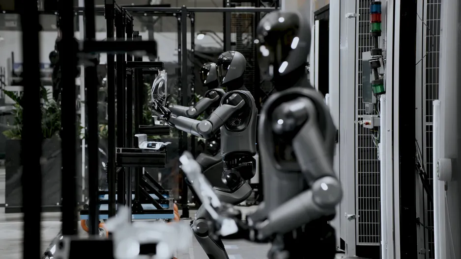
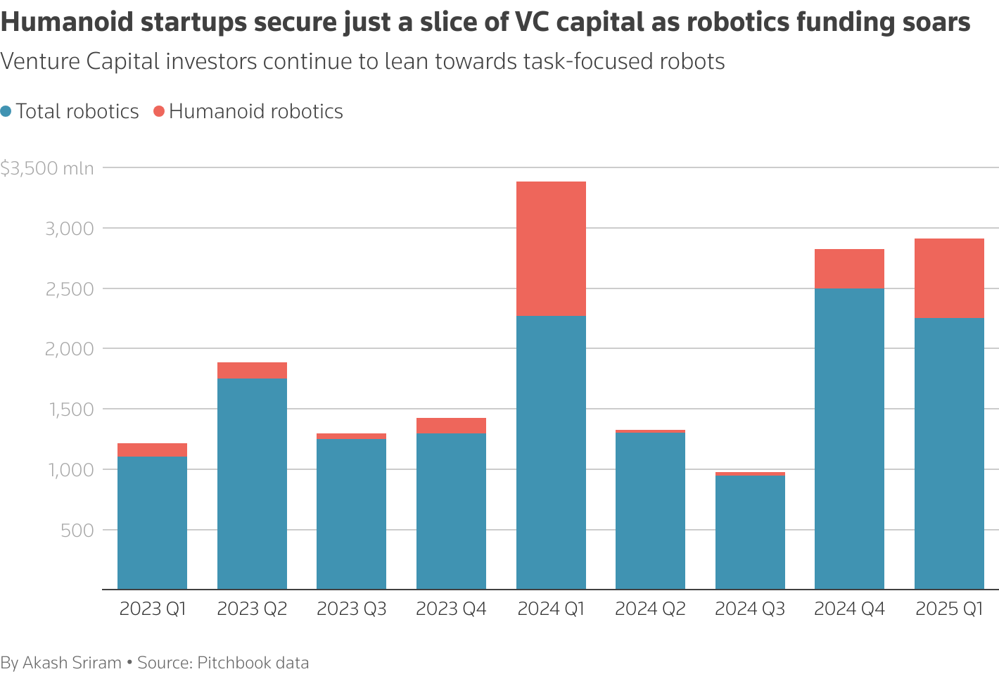

Les investisseurs à l’heure du réalisme
Publié le 28 mai 2025
Récemment, les robots humanoïdes impressionnent : ils courent des marathons, dansent, franchissent des parcours d’obstacles… et fascinent les réseaux sociaux. Mais si le grand public se laisse séduire par ces prouesses spectaculaires, les investisseurs, eux, gardent les pieds sur terre. Leur attention se porte de moins en moins sur l’exploit technique, et de plus en plus sur l’utilité concrète.
Les besoins des entreprises sont clairs : des robots simples, efficaces, rentables, capables de transporter des pièces, déplacer des charges, inspecter des équipements. Et pour cela, pas besoin de jambes articulées ou de saltos arrière.
D’où l’intérêt croissant des industriels et investisseurs pour les robots spécialisés, conçus pour des tâches ciblées dans des secteurs en tension, où l’automatisation répond à des enjeux bien réels : pénibilité, pénuries de main-d’œuvre, cadence de production, sécurité…
La tendance est confirmée par les analystes : au premier trimestre 2025, 2,26 milliards de dollars ont été investis dans la robotique à l’échelle mondiale, dont plus de 70 % dirigés vers des machines dédiées à des tâches précises.
« Les usines ont besoin de machines qui livrent du matériel, tractent des charges ou répètent des gestes simples, pas de robots qui font le show », résume un analyste du secteur.
En somme, les entreprises cherchent à créer des machines non humanoïdes, capables d’exécuter des tâches physiques qui évitent les projecteurs mais remplissent une mission précise — et rentable.
L’exemple de la startup texane Diligent Robotics illustre cette approche pragmatique. Son robot Moxi livre médicaments, échantillons et matériel dans les hôpitaux.
« En résolvant un problème très spécifique dans un secteur à forte demande, nous avons créé un modèle économique viable », explique Andrea Thomaz, PDG de Diligent Robotics.
Même constat du côté du fond d'investissement Era Ventures, qui soutient ViaBot et ses robots autonomes de nettoyage pour parkings.
« Vous allez voir émerger des robots très spécialisés, utiles, efficaces et bon marché. Et peut-être qu’à terme, cette logique mènera naturellement vers des humanoïdes. », affirme Raja Ghawi.
L’humanoïde ? Oui mais...
Chez Boston Dynamics, pourtant pionnier de l’humanoïde, la prudence domine aussi. Si leur robot Atlas impressionne toujours en vidéo grâce à ses capacités mobiles impressionnantes, son usage reste limité.
« Aujourd’hui, la vraie valeur est dans les designs ciblés », reconnaît Marc Theermann, directeur de la stratégie.
Même son de cloche chez Chris Walti, ancien chef de projet chez Tesla, qui doute de la pertinence du robot Optimus voulu par Elon Musk. En réponse à Musk qui affirmait rêver que les robots Optimus de Tesla travaillent par milliers dans ses usines d’ici la fin de l’année, Walti a émis des réserves affirmant que les robots humanoïdes comme Optimus n’étaient pas la meilleure option pour le travail en usine.
Il voit dans les robots humanoïdes un potentiel immense, mais leur forme humaine les rend moins efficaces dans des environnements comme les entrepôts, la logistique ou la fabrication.
« Ce n’est pas un format utile. Les tâches industrielles sont répétitives et doivent être exécutées vite. La forme humaine est un handicap », affirme-t-il.
Depuis, Walti a fondé sa propre startup, Mytra, qui conçoit des robots non humanoïdes pour la logistique en entrepôt. Il plaide pour des formats simples, conçus pour être efficaces, pas pour imiter l’humain.
L’humanoïde, un défi technique et économique
Les robots humanoïdes posent aussi des problèmes de coûts. Selon une étude de Standard Bots, leur prix varie entre 50 000 et 200 000 dollars, contre 5 000 à 100 000 pour les robots spécialisés. Un surcoût qui s'explique principalement par leurs nombreux capteurs, caméras, actionneurs…
Car en effet, ils doivent apprendre à évoluer dans des environnements imprévisibles et complexes. Un humanoïde doit interagir avec le monde réel et raisonner pour s'y adapter. Et cela passe notamment par le besoin d'IA avancées pour traiter des données sensorielles en temps réel. C’est pourquoi, aujourd’hui, ces humanoïdes sont pour la plupart cantonnés à des environnements contrôlés, comme les usines automobiles.
« La robotique humanoïde, c’est un problème de neuvième manche, alors qu’on est encore en troisième manche », résume Walti.
« La forme humaine a évolué pour survivre dans la nature, pas pour accomplir des tâches répétitives. Pourquoi utiliser une forme sous-optimale pour faire exactement ce genre de tâches ? »
La robotique repose les pieds sur terre
Le message des investisseurs est clair : à quoi bon ressembler à l'humain si cela nuit à la rentabilité ? Pourtant, les prouesses techniques des robots humanoïdes progressent à grands pas, et leur viabilité en tant que machines polyvalentes finira peut-être par s’imposer.